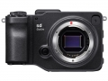

器材库 > APS及其以下画幅可换镜头数码相机 > sd Quattro

规格总览
产品类型
APS画幅可换镜头数码相机
发布日期
2016-02-23
影像规格
影像传感器
Foveon X3 (Quattro)
影像传感器尺寸
23.4×15.5mm
总像素
约3300万
有效像素
约2900万
影像处理器
双「TRUE III」图像处理引擎
静态图像格式
JPEG, RAW, RAW+JPEG
静态图像尺寸
RAWHIGH T:5,424×3,616 / M:2,712×1,808 / B:2,712×1,808LOW T:2,704×1,808 / M:2,704×1,808 / B:2,704×1,808
静态图像质量
FINE, NORMAL, BASIC
画幅比
3:2, 4:3, 16:9, 1:1, 21:9, 7:6
镜头和对焦
对焦系统类型
混合式自动对焦(相位检测式 & 反差式)
曝光控制
测光模式
中央重点测光, 评价测光, 点测光
测光范围
0EV~17EV
曝光模式
(P)程序自动曝光、(A)光圈优先自动曝光、(S)快门优先自动曝光、(M)手动曝光
快门类型
电子控制焦平面快门
快门速度
1/4000秒～30秒、Bulb
闪光同步速度
1/180
曝光补偿
±5EV以1/3EV级调整
自动曝光锁
有
ISO感光度
ISO 100-6400
取景器/显示屏
取景器
电子取景器
取景范围
100%
取景放大倍率
（50mm F1.4、∞、-1m-1）约1.09倍
屈光度调节范围
约-4m-1～+2m-1
LCD类型
彩色TFT LCD
LCD尺寸
3.0英寸
LCD像素
约162万
视野率
100%
文件输入/输出
存储卡
SD/SDHC, SDXC, Eye-Fi
数据接口
USB3.0
视频/音频接口
C型HDMI接口
电源
电池
锂离子充电电池BP-61
外接电源
AC适配器SAC-7（另购）
机身规格
颜色
黑色
尺寸
147×95.1×90.8mm
重量
约625g
其它
配件端口
热靴, 快门线
工作温度
0~40℃
附件
锂离子充电电池BP-61，电池充电器BC-61，电池充电器用电缆，USB线缆，背带，机身盖，使用说明书
drlyly752018-06-22 16:252.63 分
操作性 0.50功能性 3.00美观性 2.00趣味性 2.00耐用性 3.00性价比 2.00解像力 4.00色彩还原 4.50
产品图 / 样片
sd Quattro
评测 / 相关文章
- 详细内容 （存档）
- X3的新革命 适马sd Quattro测评 （存档）
- ［资讯］适马为sdQ用户提供免费清洁服务 （存档）
- ［试用］适马sd Quattro实拍样张 （存档）
- ［试用］卓尔不群 适马sd Quattro上手试用 （存档）
- ［资讯］提高相机稳定性 适马sd Quattro固件升级 （存档）
- ［资讯］适马sd Quattro高清外观图赏 （存档）
- ［资讯］老机换新颜 适马推出sdQ相机以旧换新活动 （存档）
- ［资讯］适马发布SD Quattro建议零售价 （存档）
- ［资讯］修正红色溢出 适马更新Photo Pro软件 （存档）
相关文章
- ［试用］暴改sdq机身卡口成索尼E口 （原站已下线）
- ［试用］从0开始适马一家的真实生活记录 （原站已下线）
- ［试用］口袋机的中画幅—适马sdQ （原站已下线）
- ［资讯］JCII公布年度历史相机 索尼适马成大赢家 （存档）
- ［资讯］奇兵制胜 适马SD Quattro获日本设计大奖 （原站已下线）
- ［资讯］适马为sdQ用户提供免费清洁服务 （存档）
- ［试用］适马sd Quattro实拍样张 （存档）
- ［试用］卓尔不群 适马sd Quattro上手试用 （存档）
- ［资讯］提高相机稳定性 适马sd Quattro固件升级 （存档）
- ［试用］X3的新革命 适马sd Quattro测评 （存档）
- ［资讯］适马sd Quattro高清外观图赏 （存档）
- ［资讯］老机换新颜 适马推出sdQ相机以旧换新活动 （存档）
- ［资讯］适马发布SD Quattro建议零售价 （存档）
- ［资讯］修正红色溢出 适马更新Photo Pro软件 （存档）
- ［资讯］适马发布新型sd Quattro系列相机 （存档）